Car mechanics
CAP Maintenance des véhicules option véhicules légers. Sixteen English words of the trade: tools, objects and everyday gestures. Open to everyone.
Four steps: from French to English, listen and choose, match, and complete a sentence at work. The Listen button reads the word in British English.
Word list
| Image | Français | English | Audio |
|---|---|---|---|
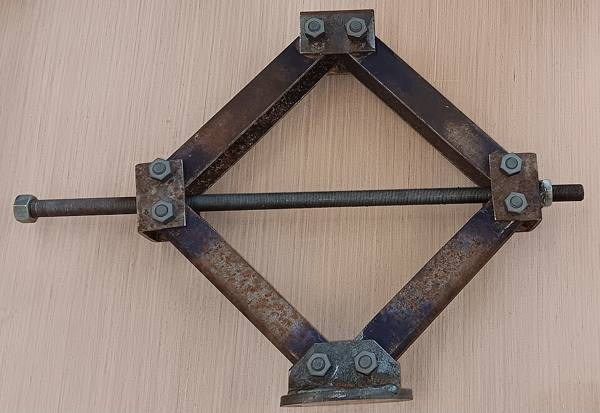 | le cric | car jack | |
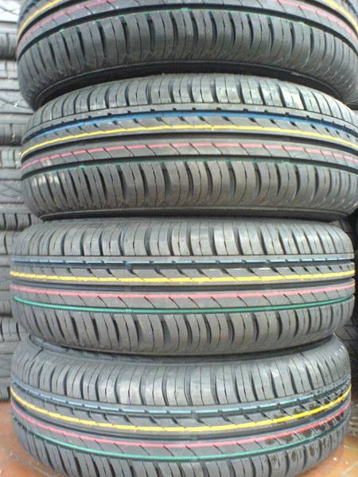 | le pneu | tyre | |
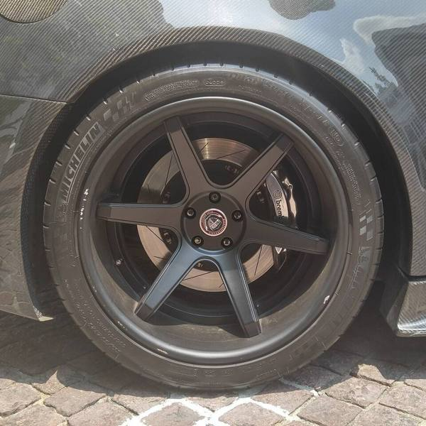 | la roue | wheel | |
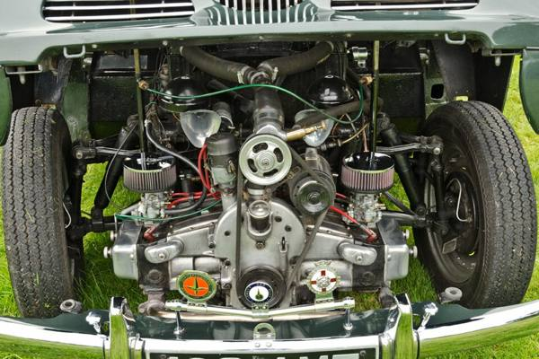 | le moteur | engine | |
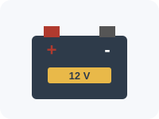 | la batterie | battery | |
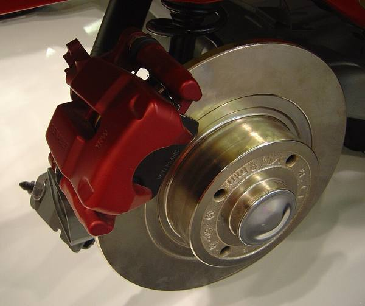 | le frein | brake | |
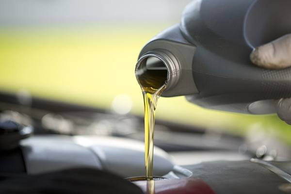 | l'huile | oil | |
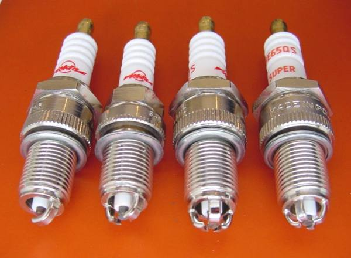 | la bougie | spark plug | |
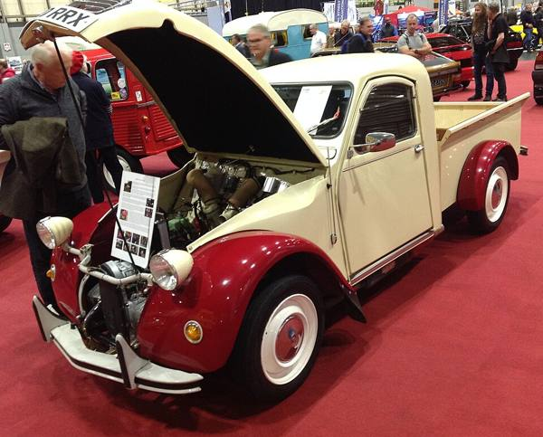 | le capot | bonnet | |
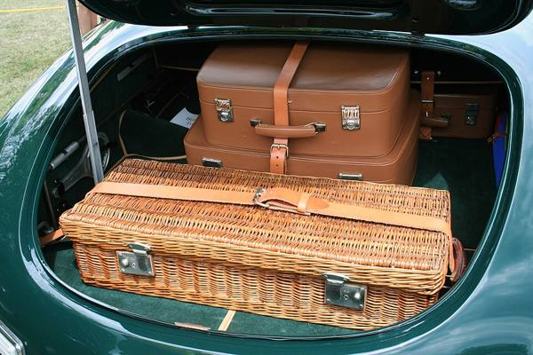 | le coffre | boot | |
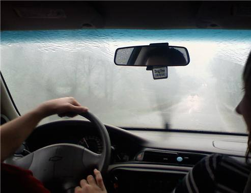 | le pare-brise | windscreen | |
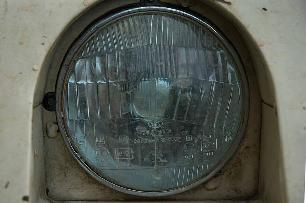 | le phare | headlight | |
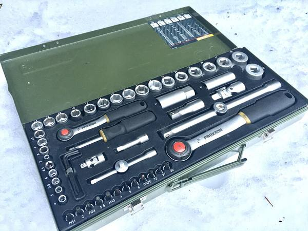 | le jeu de douilles | socket set | |
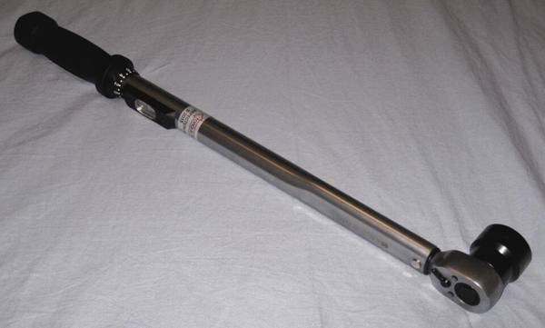 | la clé dynamométrique | torque wrench | |
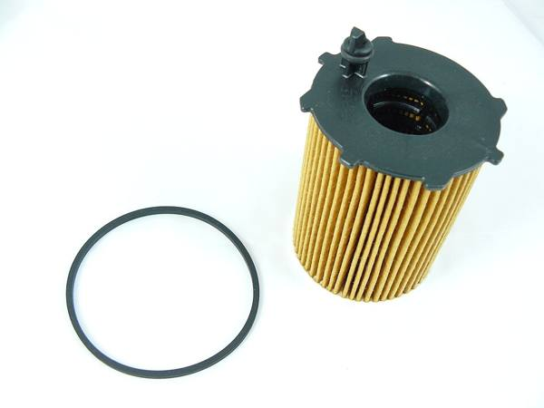 | le filtre à huile | oil filter | |
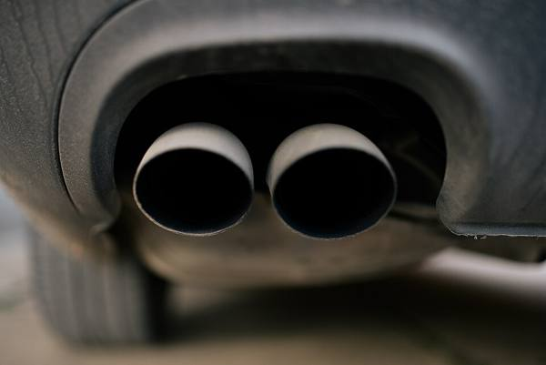 | le pot d'échappement | exhaust |
Teacher key: sentences at work
- Lift the car with the ________. (car jack)
- Open the ________ to check the engine. (bonnet)
- The ________ is flat: change the wheel. (tyre)
- The car will not start: check the ________. (battery)
- Change the ________ and the oil filter. (oil)
- Tighten the wheel nuts with the ________. (torque wrench)
In steps 1, 2 and 3, the right answer is the line in the word list.
Image credits
Photos under an open licence, from Wikimedia Commons, resized for the phone. Original drawings for gestures and ideas.
- le cric (car jack) : photo by Simiprof, licence CC0, file page on Wikimedia Commons.
- le pneu (tyre) : photo by Mattes, licence CC BY-SA 3.0, file page on Wikimedia Commons.
- la roue (wheel) : photo by Iorisrandombses5001, licence CC0, file page on Wikimedia Commons.
- le moteur (engine) : photo by SG2012, licence CC BY 2.0, file page on Wikimedia Commons.
- la batterie (battery) : original drawing, Grand Tour, CC BY-NC-SA 4.0.
- le frein (brake) : photo by David Monniaux, licence CC BY-SA 3.0, file page on Wikimedia Commons.
- l'huile (oil) : photo by SIGAUS, licence CC BY-SA 4.0, file page on Wikimedia Commons.
- la bougie (spark plug) : photo by Téléversé par Socyo (Wikimedia Commons), licence Public domain, file page on Wikimedia Commons.
- le capot (bonnet) : photo by andreboeni, licence CC BY 2.0, file page on Wikimedia Commons.
- le coffre (boot) : photo by Mr.choppers, licence CC BY-SA 3.0, file page on Wikimedia Commons.
- le pare-brise (windscreen) : photo by Malinaccier, licence CC BY 3.0, file page on Wikimedia Commons.
- le phare (headlight) : photo by Dmitry Makeev, licence CC BY-SA 4.0, file page on Wikimedia Commons.
- le jeu de douilles (socket set) : photo by Pittigrilli~commonswiki, licence CC BY-SA 4.0, file page on Wikimedia Commons.
- la clé dynamométrique (torque wrench) : photo by Lead holder, licence CC BY-SA 4.0, file page on Wikimedia Commons.
- le filtre à huile (oil filter) : photo by Voton.cz autodíly, licence CC BY-SA 4.0, file page on Wikimedia Commons.
- le pot d'échappement (exhaust) : photo by Shixart1985, licence CC BY 2.0, file page on Wikimedia Commons.
Vocabulary sheet to print
Large type (16 point minimum), in three formats: